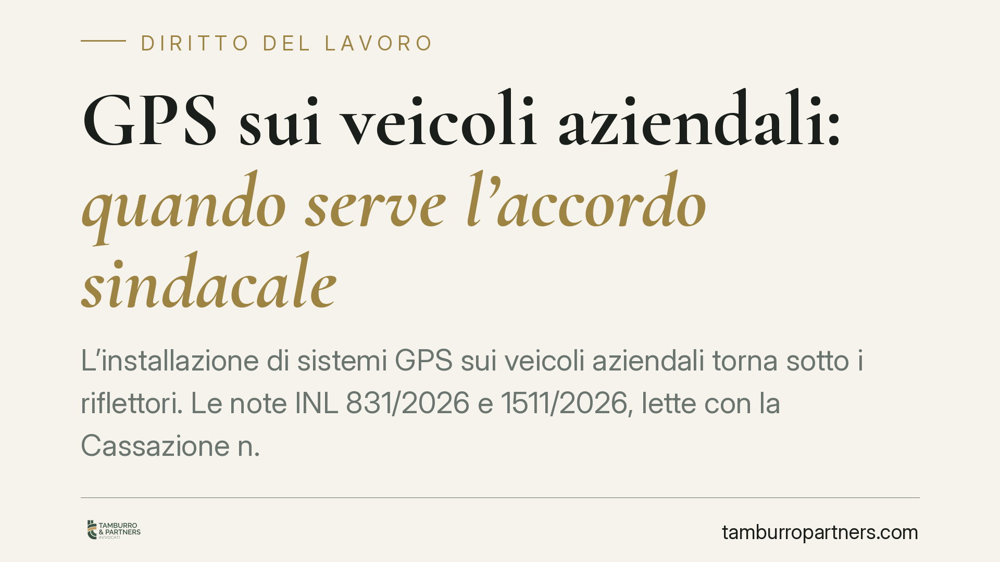

GPS sui veicoli aziendali: quando serve l'accordo sindacale
L'installazione di sistemi GPS sui veicoli aziendali torna sotto i riflettori. Le note INL 831/2026 e 1511/2026, lette con la Cassazione n. 30821/2025, chiariscono quando serve l'accordo sindacale o l'autorizzazione dell'Ispettorato ex art. 4 dello Statuto dei lavoratori e quando i dati raccolti possono alimentare controlli difensivi e procedimenti disciplinari. Una mappa utile per datori e lavoratori.

Il quadro di partenza
Il GPS installato su un mezzo aziendale non serve solo a ottimizzare i percorsi. Consente di sapere dove si trova il veicolo, e quindi anche chi lo guida, in ogni momento. Per questo rientra tra gli strumenti che possono comportare un controllo a distanza dell'attività dei lavoratori, materia disciplinata dall'art. 4 della Legge 300/1970 (Statuto dei lavoratori).
La norma distingue due situazioni. Gli strumenti installati per esigenze organizzative, produttive, di sicurezza del lavoro o di tutela del patrimonio aziendale (comma 1) richiedono un accordo con le rappresentanze sindacali oppure, in mancanza, l'autorizzazione dell'Ispettorato territoriale del lavoro. Gli strumenti usati dal lavoratore per rendere la prestazione e gli strumenti di registrazione degli accessi e delle presenze (comma 2) ne sono invece esenti.
Cosa dicono INL e Cassazione
Le note INL n. 831/2026 e n. 1511/2026 confermano che il GPS, di regola, non è uno "strumento per rendere la prestazione" ai sensi del comma 2. Il mezzo si guida senza localizzatore: il GPS è un'aggiunta che consente il controllo. Di conseguenza, la sua installazione ricade nel comma 1 e richiede accordo sindacale o autorizzazione dell'Ispettorato.
Esiste però un'eccezione operativa. Quando la localizzazione è un elemento indispensabile per erogare un servizio - si pensi a flotte il cui funzionamento dipende dalla geolocalizzazione in tempo reale - il GPS può essere considerato strumento di lavoro e sottrarsi alla procedura autorizzatoria. La valutazione è caso per caso e grava sul datore, che deve poter dimostrare l'effettiva indispensabilità.
La Cassazione n. 30821/2025 aggiunge un tassello sul versante probatorio. Anche quando il controllo è lecito, i dati raccolti possono essere utilizzati a fini disciplinari solo nel rispetto delle condizioni dell'art. 4, comma 3: informativa adeguata al lavoratore sulle modalità d'uso degli strumenti e sulle modalità di controllo, e osservanza della normativa sulla protezione dei dati personali. La Corte ribadisce inoltre lo spazio dei cosiddetti controlli difensivi, finalizzati ad accertare condotte illecite già sospettate, che restano ammessi entro limiti rigorosi di proporzionalità.
Perché conta per l'azienda
Le implicazioni pratiche sono concrete. Un GPS installato senza accordo o autorizzazione, laddove dovuti, espone l'azienda a un vizio originario: i dati raccolti rischiano di essere inutilizzabili in sede disciplinare o giudiziale, e il datore può incorrere in profili sanzionatori sul piano lavoristico e su quello della protezione dati.
Il problema non riguarda solo chi gestisce flotte ampie. Interessa anche realtà più piccole: imprese di trasporto, aziende di raccolta rifiuti, istituti di vigilanza che equipaggiano le guardie giurate. In tutti questi casi la finalità dichiarata del sistema e la sua reale indispensabilità per il servizio fanno la differenza tra procedura necessaria e procedura esclusa.
Sul fronte del lavoratore, la tutela passa dall'informativa. Un controllo di cui non sia stato adeguatamente informato, con indicazione delle modalità d'uso dello strumento e dei poteri datoriali, difficilmente potrà fondare una contestazione disciplinare valida.
Cosa fare in concreto
- Qualificate la finalità del GPS prima dell'installazione. Definite per iscritto se risponde a esigenze organizzative, di sicurezza o di tutela del patrimonio, oppure se è davvero indispensabile per erogare il servizio.
- Attivate la procedura dell'art. 4, comma 1, stipulando l'accordo con le RSA/RSU o, in mancanza, richiedendo l'autorizzazione all'Ispettorato territoriale competente.
- Predisponete e consegnate un'informativa chiara su modalità d'uso dello strumento e modalità di controllo, come richiesto dal comma 3, conservando prova della consegna.
- Verificate la conformità al GDPR: base giuridica, principio di minimizzazione, tempi di conservazione dei dati di localizzazione e registro dei trattamenti.
- Documentate il percorso decisionale. In caso di contenzioso, poter ricostruire finalità, procedura e informativa è spesso ciò che rende i dati realmente utilizzabili.
Consigliamo di sottoporre a verifica anche i sistemi già installati: una regolarizzazione tempestiva è più semplice e meno onerosa di un contenzioso che mette in discussione l'intera impianto probatorio.
Disclaimer
Contributo informativo a cura di Tamburro & Partners - Avv. Giuseppe Tamburro. Non costituisce parere legale.
Ogni storia di lavoro ha i suoi tempi.
Se gestisci HR e vuoi un confronto su contenzioso, ispezioni o licenziamenti, scrivi allo studio. Ti rispondiamo entro un giorno lavorativo.